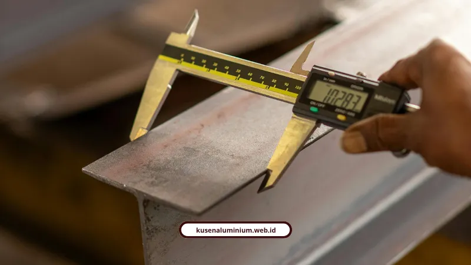

Kontrol Kualitas Kusen Sebelum Dikirim ke Medan

📌 Ringkasan Inti
Pengecekan mutu dan kontrol kualitas menyeluruh sebelum pengiriman kusen dari Malang ke Medan merupakan jaminan mutlak agar produk tiba dalam kondisi sempurna dan siap dipasang presisi:
- Penerapan Pre-Shipment Inspection (PSI) saat progres 80–100% menggunakan parameter AQL ketat (Critical Defect 0%, Major Defect 2,5%, Minor Defect 4,0%).
- Standarisasi ukuran SNI koordinasi modular, sponing 10–15 mm, serta toleransi pengurangan 2–5 mm untuk akurasi dudukan bukaan dinding.
- Uji kadar kelembapan (moisture content) pada ambang aman 8–12% menggunakan MC meter pinless untuk mencegah risiko muai-susut atau jamur.
- Mitigasi fenomena kondensasi container rain via desikan Super Dry dosis ganda, inspeksi fisik kontainer, dan bahan baku kiln-dried.
- Standar kemasan kargo berlapis (full box/wooden crate, corner protector, void filler, dan strapping kencang) dengan label instruksi penanganan jelas.
- Standar Dimensi Kusen Modular dan Toleransi Presisi
- Apa Itu Pre-Shipment Inspection dan Kapan Dilakukan?
- Kenapa Kadar Kelembapan Material Harus Dicek Sebelum Kirim?
- Apa Itu Container Rain dan Bagaimana Cara Mencegahnya?
- Bagaimana Standar Packing yang Kami Terapkan?
- Kontrol Kualitas Berlapis Menjamin Presisi Sampai Tujuan
Kontrol kualitas kusen sebelum dikirim mencakup pengecekan dimensi presisi, kadar kelembapan, dan standar AQL supaya barang sampai di Medan tanpa cacat produksi. Setiap tahap ini kami lakukan sebelum barang naik ke kendaraan pengiriman.
Kalau Anda pernah dengar cerita barang pesanan sampai dalam kondisi cacat atau ukurannya meleset, biasanya itu bukan karena nasib sial. Itu tanda proses pengecekan mutu sebelum pengiriman tidak dijalankan dengan benar.
Standar Dimensi Kusen Modular dan Toleransi Presisi
Untuk urutan kayu kusen, ukuran yang dipakai mengacu pada standar koordinasi modular sesuai SNI 03-1979-1990. Ukuran kayu terpilih untuk kusen di antaranya 60x100 mm, 60x120 mm, 60x130 mm, 60x150 mm, 80x100 mm, 80x120 mm, 80x150 mm, 100x120 mm, sampai 100x150 mm.
Standar tebal daun pintu ditetapkan 33 mm, 35 mm, atau 40 mm, sedangkan daun jendela 30 mm, 35 mm, atau 40 mm. Toleransi kedalaman sponing untuk dudukan daun pintu atau jendela berada di kisaran 10 sampai 15 mm.
Untuk akurasi ukuran, rumus yang dipakai adalah lebar bagian dalam kusen sama dengan lebar bukaan dinding dikurangi dua kali tebal kayu, dengan toleransi pengurangan 2 sampai 5 mm.
Kalau Anda ingin tahu bagaimana presisi seperti ini diterapkan pada material aluminium dalam sistem prefabrikasi kami, penjelasan lengkapnya ada di artikel utama soal jasa kusen aluminium yang melayani Medan.
Apa Itu Pre-Shipment Inspection dan Kapan Dilakukan?
Pre-Shipment Inspection, atau sering disingkat PSI, adalah pemeriksaan menyeluruh yang dilakukan saat produksi sudah mencapai 80 sampai 100 persen selesai dan produk sudah dikemas minimal 80 persen.
Tujuannya sederhana, memastikan barang yang akan dikirim benar-benar sesuai spesifikasi sebelum terlambat diperbaiki di tengah jalan.
Standar AQL (Acceptable Quality Limit) 3 Kategori Cacat:
- Critical Defect, 0% AQL: untuk cacat terkait bahaya keselamatan atau kegagalan struktur seperti konstruksi roboh atau bagian tajam menonjol. Kategori ini sama sekali tidak ditolerir.
- Major Defect, 2,5% AQL: untuk cacat yang membuat produk tidak layak jual atau tidak bisa dipasang, misalnya ukuran meleset jauh dari spesifikasi atau fungsi engsel macet.
- Minor Defect, 4,0% AQL: untuk cacat kosmetik ringan seperti variasi warna finishing atau noda kecil yang mudah dibersihkan.
Checklist pengecekannya dibagi dua jenis. Checklist umum meliputi pemeriksaan visual warna finishing, kelurusan konstruksi, kerapian sambungan, dan fungsi kelancaran komponen bergerak.
Checklist spesifiknya lebih detail lagi, mencakup pengecekan moisture content di 3 sampai 5 titik komponen, uji tingkat kilap dengan gloss meter, uji ketahanan gores finishing, pengukuran dimensi pakai kaliper, sampai drop-test pada kemasan karton.

Kenapa Kadar Kelembapan Material Harus Dicek Sebelum Kirim?
Karena material yang lembap berisiko berubah bentuk selama perjalanan, apalagi untuk pengiriman jarak jauh yang melewati kondisi cuaca berbeda-beda.
Kontrol kelembapan atau moisture content diukur menggunakan MC meter pinless, dan idealnya berada di rentang 8 sampai 12 persen sebelum barang dimuat ke kontainer. Kalau angkanya di luar rentang ini, risiko melengkung atau berjamur jadi jauh lebih tinggi.
Christian Febrianto, Benny Agus Setiono, dan Sapit Hidayat, peneliti logistik maritim dan vokasi pelayaran dari Universitas Hang Tuah, menjelaskan risiko ini dari sisi teknis pelayaran:
"Produk berbasis kayu memiliki sifat higroskopis yang sangat mudah menyerap kelembapan dari lingkungan. Dalam pengiriman antar-pulau jalur laut, kebocoran kontainer atau cacat pada segel pintu dan dinding kontainer berisiko tinggi menyebabkan kayu melengkung, delaminasi, hingga berjamur."
Inspeksi Kualitas & Fabrikasi Kusen Aluminium Presisi Bergaransi
Seluruh unit kusen, pintu, dan jendela melewati tahapan kontrol kualitas berlapis di workshop sebelum packing wooden crate, menjamin hasil instalasi di Medan presisi dan bergaransi resmi.
Apa Itu Container Rain dan Bagaimana Cara Mencegahnya?
Container rain adalah fenomena kondensasi di dalam kontainer akibat fluktuasi suhu ekstrem selama pelayaran. Udara lembap yang terperangkap mengembun di dinding dan langit-langit kontainer, lalu menetes kembali ke barang kiriman.
Fenomena ini bukan kejadian langka. Sekitar 10 persen dari seluruh pengiriman kontainer secara global mengalami kerusakan akibat masalah kelembapan semacam ini.
Untuk material yang bersifat higroskopis, dampaknya bisa berupa perubahan warna, barang melengkung atau warping, delaminasi, sampai tumbuhnya jamur dan kapang. Beberapa langkah mitigasi yang wajib dilakukan meliputi:
- Pemeriksaan fisik kontainer sebelum loading, memastikan segel pintu rapat dan dinding atau lantai tidak aus
- Penggunaan bahan baku yang sudah melalui pengeringan tungku, atau kiln-dried
- Penambahan desikan penyerap kelembapan seperti silica gel atau Super Dry, bahkan sampai dua kali lipat dosis standar
- Pemasangan sensor pemantau kelembapan secara real-time di dalam kontainer
Estimasi waktu transit untuk kargo laut dari Malang ke Medan sendiri sekitar 5 sampai 6 hari sejak kapal berangkat. Untuk perhitungan berat volume material berukuran besar namun ringan seperti kusen, rumus yang dipakai adalah panjang x lebar x tinggi dalam cm, dibagi 4000 atau 5000.
Bagaimana Standar Packing yang Kami Terapkan?
Ada tiga jenis packing kayu yang biasa digunakan tergantung kebutuhan proteksi barang:
Full Box
Menutup seluruh bagian barang secara utuh tanpa celah, memberi perlindungan maksimal dari benturan, debu, dan cipratan air.
Rangka
Menggunakan kerangka kayu luar dikombinasikan bubble wrap atau plastic wrapping, lebih ekonomis dan ringan.
Pallet
Alas datar dari kayu untuk menopang tumpukan barang, memudahkan proses bongkar muat dengan forklift.
Untuk penguatan kemasan, kami mengunci setiap sudut dan siku kusen menggunakan corner protector, mengisi ruang kosong di dalam box dengan void filler supaya barang tidak mengocak saat guncangan kapal, lalu menyegel lakban luar dengan pola H dan menambahkan strapping.
Label penanganan kargo juga wajib ditempel jelas, seperti "FRAGILE / MUDAH PECAH", "THIS SIDE UP / ARAH ATAS", dan "JANGAN DITEKAN", supaya tim kurir tahu cara menangani barang dengan benar saat proses sortir.
Kalau Anda penasaran soal detail moda pengiriman dan estimasi tarifnya dari Malang ke Medan, kami sudah bahas lengkap di artikel terpisah soal proses pengiriman kusen presisi antar pulau ini.
"Standar QC bukan sekadar cek fisik di akhir, tapi disiplin toleransi milimeter sejak pemotongan miter saw hingga perlindungan kelembapan di kontainer kargo laut. Memastikan kusen bebas cacat sebelum berangkat adalah komitmen kami agar instalasi di Medan langsung pas tanpa kendala."
Kontrol Kualitas Berlapis Menjamin Presisi Sampai Tujuan
Kontrol kualitas kusen bukan formalitas administratif, tapi benteng terakhir sebelum barang meninggalkan workshop menuju Medan. Dari pengecekan AQL, moisture content, sampai mitigasi container rain, semua tahap ini kami lalui supaya produk yang Anda terima benar-benar sesuai standar.
Kalau Anda ingin memesan kusen aluminium dengan standar mutu yang sudah teruji seperti ini, silakan konsultasi langsung dengan tim kami. Cek dulu hasil pengerjaan kami di halaman Galeri, atau hitung estimasi biaya proyek Anda lewat Estimator Biaya.
FAQ Seputar Kontrol Kualitas Kusen
AQL (Acceptable Quality Limit) adalah batas toleransi cacat produk, meliputi Critical Defect 0% untuk keselamatan struktur, Major Defect 2,5% untuk fungsi produk, dan Minor Defect 4,0% untuk variasi kosmetik ringan.
Mitigasi dilakukan melalui pemeriksaan fisik kerapatan pintu dan dinding kontainer, penggunaan bahan baku kering tungku (kiln-dried), penambahan desikan penyerap kelembapan Super Dry dosis ganda, dan sensor real-time.
Estimasi waktu transit kapal kargo terjadwal rute pelabuhan Surabaya/Malang ke Medan berkisar antara 5 sampai 6 hari kerja sejak keberangkatan kapal.